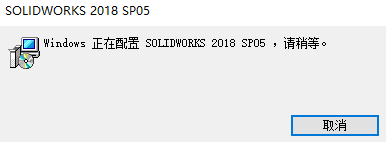
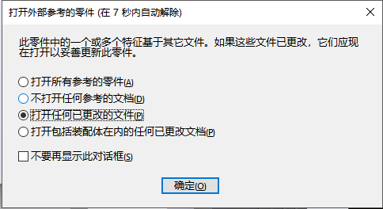
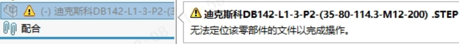
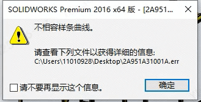

F-常见错误信息
错误信息以及在生成 SOLIDWORKS 草图和模型时可能解决错误的方法。
打开问题
无法图形注册表文件
无法在文件夹中找到图形注册表文件
无法找到文件
文件移动或改名导致的装配体“丢失参考”的问题，可以手动【浏览文件】来加载需要的文件，或是暂时【压缩此零部件】的方式打开装配体。

Window:正在配置
打开SW程序，弹窗：Window:正在配置S0LIIORKS2018 SP05，清稍等
方法：
1、首先选择SOLIDWORKS的快捷方式鼠标右键选择属性可以看到SOLIDWORKS的安装目录。
2、进入SOLIDWORKS的安装目录，查找到sldProcMon.exe这个文件，将其删除。
3、找到SLDWORKS.exe选中它然后鼠标右键选择“发送到”-“桌面快捷方式”并删除原有的快捷方式图标。
4、点击新的SOLIDWORKS快捷方式重新启动。
这个操作只对当前安装的产品有效
出现在多版本使用时的问题，当我的启动操作使用了旧版本（卸载）的程序启动时，则会提示我们，当前“这个操作只对当前安装的产品有效”。
方法：
右键SW文件，选择打开方式，修改设置默认打开方式。（注意，这里需要去浏览到对应的版本文件夹下，的swShellFileLauncher.exe文件进行打开）
版本尚未被适当地授权
F-版本尚未被适当地授权，请联系您的供应商 (A100,68)
F-VBE6EXT.OLB 不能被加载
重建
打开可用于 xxx 的摘要
链接的系列零件设计表
F-找不到标准数据库
顾名思义，就是没有.sldedb 的文件，你可能需要去复制正常使用 Toolbox 的文件夹来使用，或者修复一下 SW。
（D:\Program Files\SolidWorks 2022\SOLIDWORKS Data\lang\english）
A：【系统选项-异形孔向导】Toolbox文件夹路径需要有数据库swbrowser内容。
F-模板无效
F-不匹配的内部 ID
所参考的文档具有不匹配的内部 ID。此提示通常在文件夹界面下，你用其他同名新文件替换原文件时出现。
让我浏览原文件：如果原文件丢失则会以压缩方式打开；
仍使用该文件：使用新的同名文件替换打开；
为此文件打开：压缩问题文件打开
同名打开
在软件如果已经打开了同名的文件时，则会出现下面的提示。同名打开会以软件当前的文件加载
（那么你可能需要注意的是：使用到该同名零件的装配体会出现文件参考改变的情况）
F-打开崩溃问题排查
问题 1：【装配体】- 打开崩溃问题排查
特征识别
featureWork 的操作
F-包含退回状态零件
该文档包含有以退回状态保存的零件 xxx。您想将之往前推进吗
F-高版本属性卡
The template file being opened is created in a newer version of Propety TabBuilder. All the new features may not be supported.

F-打开外部参考的零件
重命名文档
该提示出现在软件内重命名后保存时提示，提示主要是该零件改名后的参考问题。默认只在当前文件生效参考，其他未打开的文件将因改名而丢失参考引用。
你可能需要在下面**”更新使用参考的位置处”**搜索与改名零部件相关的文件位置
零件
折弯系数表无效
折弯系数表无效。是钣金规格表有问题，已知在使用【材料-钣金-规格表】时，在修改镜像的材质（且材质的规格表不一致）时出现。
F-材质不能编辑
在此材料更改之前，组件的总质量被覆盖。这种新材料的密度不会影响部件的质量。

F-xml 声明无效
材质库文件的元素在高低SW版本问题
F-材质库意外元素
元素 sheetmetalOption 为意外元素。是 2019 新功能材料增加”钣金属性”的问题，此时低版本的文件不会启用 2019 后的材质库文件。
需要删除高版本的 sheetmetalOption 元素才能使用（不过比较麻烦，所以自己开发了个修改工具）。
F-升级螺纹线
升级螺纹线（包括 2018 之前为旧，2019 之后有升级螺纹线功能）
装配体
配合问题
此配合的某个实体或参考特征已经被压缩、无效或已不再存在。

F-无法定位该零部件
打包位置有文件同名
F-生成有冲突的前后关系

外部参考在智能零部件中禁用
参考将自动断开
您的选择为已外部参考;由于当前设定，参考将自动断开
方法：
似乎是哪里【系统选项】设定问题，可以尝试恢复默认设置看看（有点怀疑【系统选项-外部参考】问题）
工程图
服务器出现意外情况

方法1：参考
另存为Excel时，服务器出现意外情况。多数可能于当前office版本于SW等程序的版本兼容问题。
例如安装高版本office后装低版本，会有影响。建议是尝试修复office（或卸载重装）
方法2：待确认
原因：Excel的com加载项启用影响。在【文件-选项-加载项-管理com加载项】-转到-取消可用加载项的勾选。
取消或删除下图中不存在的加载项。重复问题操作验证。

F-找不到calloutformat

终点合并设置为更小

F-符号库文件缺失

不能替换相同视图
工程图视图引用相同模型并且不会被替换
该工程图可能需要更新
当你编辑零部件修改后，工程图没有打开同步做保存时会出现。（因为出详图是打开工程图最后一次保存的，装配体有改动就会有如下弹窗提示）
字体缺失
工程图另存PDF时出现，Arial Unicode M5字体缺失 ，保存失败。
A：可以尝试用打印方式，选择“Microsoft To PDF的打印机打印。
A2：安装缺少的字体；
其他
出现3D数据解析错误
3DPDF问题，配置文件损坏使用以下方法之一： 生成新配置文件
关闭Adobe Acrobat Pro版本并重命名以下文件夹：
- C:\Users\UserName\AppData\Local\Adobe\Acrobat*DC到C:\Users\UserName\AppData\Local\Adobe\Acrobat*DC_OLD**
- 如果可见，请将C:\Users\UserName\AppData\Local\Adobe\Acrobat*20XX更改为C:\Users\UserName\AppData\Local\Adobe\Acrobat*20XX_OLD**
重新打开三维PDF文件以查看

所选模板中已有实体存在
无法运行SW2016
“To perform a new user reset, please run RnDTools\SWNewUserReset.exe.SolidWorks will now exit”。我如何修复此问题？
要解决此问题，请执行以下步骤：
1.在计算机上，打开注册表编辑器。
a.单击“开始”按钮 > 键入“regedit”> 按下“Enter”。
2.找到以下注册表项：
HKEY_LOCAL_MACHINE\Software\SolidWorks\General
3。右键单击以选择“INITIALIZE_ALL_SETTINGS”> 单击“修改”。
4.将“Value data”设置为“0”。
5.单击“确定”，然后退出注册表编辑器。
6.打开 SOLIDWORKS® 应用程序。
不相容样条曲线
不支持的曲线类型

OpenClipboard 失败
装配体插入零部件时提示：OpenClipboard 失败

当我将组件插入装配体时，为什么会看到”OpenClipboard Failed”错误?
此消息通常表示计算机上缺乏资源。请查阅以下资料:
1. 确保%temp%文件夹中有足够的空闲空间。
2. 确保%temp%文件夹具有适当的权限。
3. 请确保系统驱动器有足够的空闲磁盘空间。
此外，重新启动计算机也可能有助于解决此问题。
为什么从设计库插入零件时出现”OpenClipboard Failed”错误?
此错误通常表明存在资源问题。尝试以下方法来解决这个问题:
1. 收到错误后，重新启动计算机。
2. 确认有足够的可用硬盘空间。
3. 删除%temp%位置中的文件。
F-库无效
SOLIDWORKS Document Manage 库无效

找不到 xxx.dll
性能
F-内存不足
SOLIDWORKS 资源监控器”检测 “内存使用”限制超过 78% 时，将显示一系列警告。